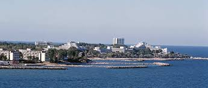

Jupiter este o staţiune balneoclimaterică componentă a municipiului Mangalia, care nu este o localitate, deoarece nu are populaţie permanentă : este aşadar un simplu cartier din localitatea Mangalia. Clasificarea ca "sat" este o greşeală deoarece staţiunea nu este o localitate permanent locuită, ci doar un cartier al municipiului Mangalia.

Staţiune de mici dimensiuni, în apropierea lacului Tismana şi a pădurii Comorova, Jupiter are o plajă lungă de aproximativ 1 km care o prelungeşte pe cea din staţiunea Neptun. Este fragmentată de numeroase golfuleţe şi diguri transversale care dau un aspect dantelat acestei porţiuni de litoral. Jupiter a fost deschisă la începutul anilor 1970. Staţiunea dispune de o bază de cazare de mare capacitate, majoritatea hotelurilor fiind de trei stele, amplasate perpendicular pe linia ţărmului.
Ca şi variante de agrement pentru adulţi, în Jupiter există posibilitatea plimbării cu scuterul de mare sau cursuri de scufundare, iar pentru copii există o zonă de agrement, amenajată pe lacurile ce leagă Jupiter de Neptun, unde aceştia se pot plimba cu hidrobiciclete în formă de lebădă. Noaptea, amatorii de distracţii pot petrece într-unul dintre cele două cluburi din staţiune, Mondy şi Paradiso.